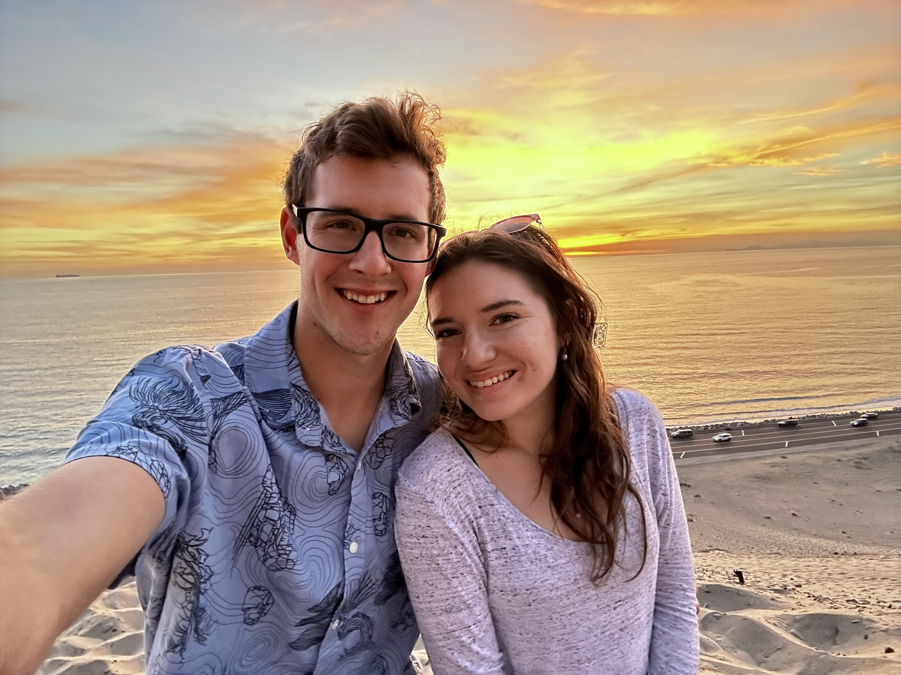

Hey Skyler, I’m so happy that you are my brother. You’ve been there for me throughout my life and I’m so glad that we
are close as brothers. You are someone that I know I can rely on and we have so much fun together. We’ve had some
wonderful times disc golfing and traveling. I loved going to Six Flags with you every week. Our time watching movies
every day was great too. There’s been so many meaningful memories and I know there will be many more. I want you to be
there for me throughout my life. I can’t wait to continue to walk through life with you, go on more trips, and make more
memories.


As I’ve been thinking about who I want standing next to me, I have realized that there is no one but you that I would
rather have as my best man. You are important to me. Yes, this means that you will have to write a speech. So, Skyler,
will you be my best man? Please let me know!
Hey Branson, I’m so lucky that I have a friend like you. We’ve gone through a lot together. Thank you for always being
there for me. Ever since we were little, we have been putting effort into hanging out. I loved Friend Friday when you
would come over and we would play video games. You taught me how to play Minecraft on the computer, and that was the
first real computer game I ever played. We’ve both helped each other through tough times, and I know that we will always
be best friends. You’ve been there for me through hard times too, and I thank you for being someone so honest and
trustworthy. I am so thankful to have a friend who I can rely on and confide in. I can’t wait to walk through the ups
and downs of marriage with you at the same time. You’ve also helped me to be successful while in high school and
college. I wouldn’t have gotten half the jobs I’ve had if it hadn’t been for you.


As Corinne and I get married, I’ve been thinking about who I want standing with me, and it’s important to me that you
are there. So, Branson, will you be a groomsman at my wedding? Please let me know.
Hey Tyler, I am truly blessed to know a guy as unique and special as you. We grew close first through years of me waking
you up every morning to play Minecraft on the computer. I bossed you around and helped you through some difficult times
even though I was pretty clueless that I was having any impact on you at all. You’ve invested so much into me
emotionally and financially and I know that I won’t ever be able to repay you. Thank you for all that you’ve done for
me. I love hanging out with you and doing crazy things. The hot tub nights have been a big part of my life, although
they haven’t made me tan at all. I have loved our Nashville trips! It’s so fun acting like kings in a foreign land while
driving around in luxury cars that give you terrible back pain. You’ve also helped me through the worst times in my
life. Thank you for always being there for me and for investing hours and hours and hours talking to me. You are a great
friend.


As I think about who I want standing beside me on my wedding day and throughout my life, it’s important to me that you
are there. So, Tyler, will you be a groomsman at my wedding? Please let me know.
Hey Boogs, where do I even begin? We’ve known each other for a long time, like all my life. I’m sure that when you
realized my personality you were horrified. I annoyed the crap out of you as a kid and probably as an adult also. But
there have been so many great times too. You introduced me to video games, maybe the worst thing that has ever happened
to me, but I loved it. I loved deleting all your progress because I couldn’t read. Thank you for investing in me through
the years. I have become a better man because of you, and I love spending time with you. You have taught me how to be a
hard worker and how to think through problems before I just go and screw things up. I’ve loved traveling with you; the
Boston trip was especially meaningful. You were there for me and watched over me. You have taken me under your wing and
helped guide me through school and life and I am truly thankful. I can’t wait to continue to walk through life together
and see what an amazing father you will be.


As I think about who I want standing beside me on my wedding day and throughout my life, it’s important to me that you
are there. So, Boogs, will you be a groomsman at my wedding? Please let me know.
Hey HoneyBear, I am so grateful that I know you as a friend. You have been a role model for me, and I know you will
continue to be. We’ve had some amazing times. The first time I remember you investing in me was a hot summer day when I
was probably 10. You came to me and Gabby and asked if we wanted to go to the Likes’ pool. You put us in the red jeep
and took us there. I was so excited, and it was awesome! You’ve invested so much into me, and I can’t thank you enough.
My favorite memory with you so far is probably building the casa. It was some hard work, but it was so fun to learn and
work while listening to Yanni. You’ve had a lot of patience with me throughout the years and I needed it. I’m so glad
that I’ve been able to help you through some difficult times, and you’ve done the same for me. I know that there will be
more times like that ahead but I’m so glad that I have people like you in my life that I can rely on and talk to. You
are a great friend and we’re stronger together.


As I think about who I want standing beside me on my wedding day and throughout my life, it’s important to me that you
are there. So, Immanuel, will you be a groomsman at my wedding? Please let me know.
Hey Uncle Bubba, you have made a big impact on my life. I have so many great memories with you. One good one was when we
went to Philip’s house. We built a fireplace out of rocks and piled wood on it. You got a sparkler and we tried to
launch it at the fire, but it didn’t work at all. We cheated and lit the fire anyway. Later, there was a giant rock that
exploded from the heat and launched right over your head into the lake. It was crazy! Thank you for investing so much in
me. I love every opportunity I get to spend time with you. The first time I tried the ice bath I thought I was going to
die, but now it is a healthy obsession. I’ve loved going on the boat with you and laughing so hard when you crash while
wakeboarding. You are a great friend and I know that you will always be there for me. As I get ready to walk through
this next chapter of my life, I am so thankful that I have you to rely on and come to with questions and wisdom.

As I think about who I want standing beside me on my wedding day and throughout my life, it’s important to me that you
are there. So, Uncle Bubba, will you be a groomsman at my wedding? Please let me know.
Hey Nick, you’ve meant so much to me throughout my life. My first memory of you was when I went to visit your family in
Boston. One night your mom made meatloaf and you refused to eat it. You cried at the table for at least 20 minutes
because your mom was making you have at least one bite. You then got put in your room for another 20 minutes until you
finally came out and took one bite. I was shocked and kept thinking, “Why don’t you just take the one bite and get it
over with??” We’ve had some awesome memories. I can also remember your mom making me wipe your butt when you were a kid,
and as a kid myself I was horrified. But as we’ve gotten older, we’ve grown closer and I appreciate you as a friend. I
love coming out and visiting you. I’m so excited to continue to grow closer to you and to walk through life with you.

As I think about who I want standing beside me on my wedding day and throughout my life, it’s important to me that you
are there. So, Nick, will you be a groomsman at my wedding? Please let me know.
Hey Ben, we’ve known each other for a while now and I’ve loved the time I’ve gotten to spend hanging out with you. I
especially love making fun of you and hearing all the clever quips you have for me. I am so excited to join your family
and have you as my brother. There’s already been some great memories and I know there will be so many more. I foresee
future board game nights where you and Corinne beat me (unless it’s trivia). I can’t wait to continue to grow closer to
you throughout my life and to continue to see you grow. I know that you will always be there and I’m very grateful for
that.

As I think about who I want standing beside me on my wedding day and throughout my life, it’s important to me that you
are there. So, Ben, will you be a groomsman at my wedding? Please let me know.
This is for groomsmen only. If you are not a groomsman you can still enjoy this. But if you are a groomsman, you must
have typed your name wrong.